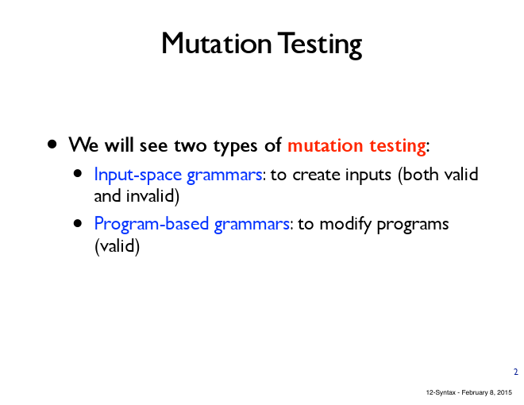
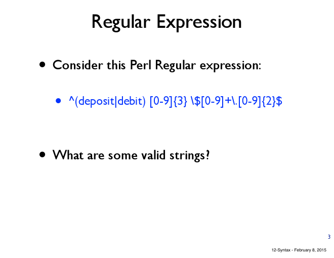
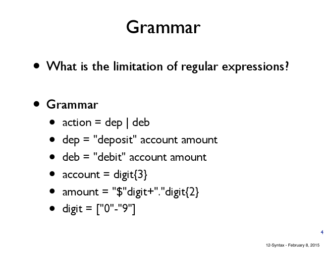
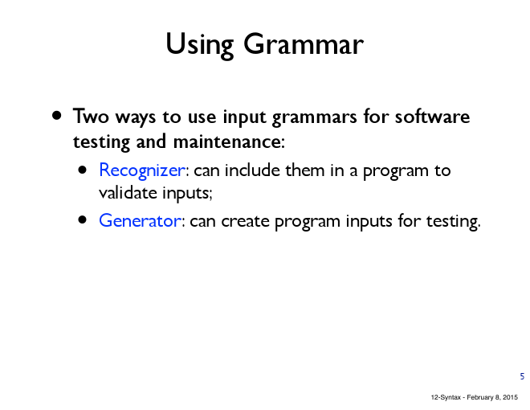
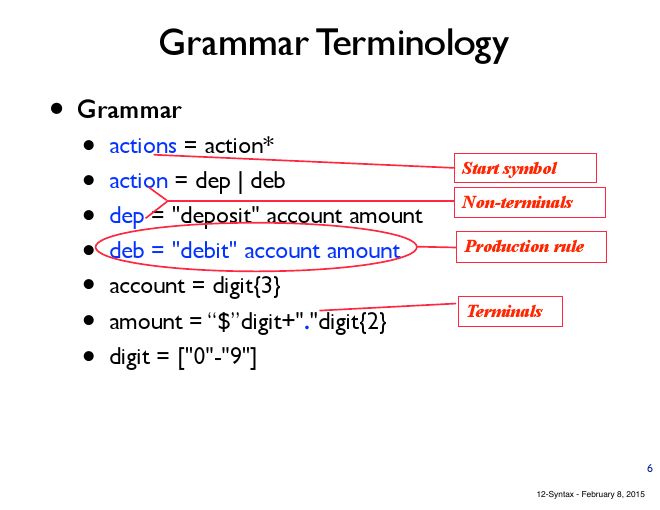
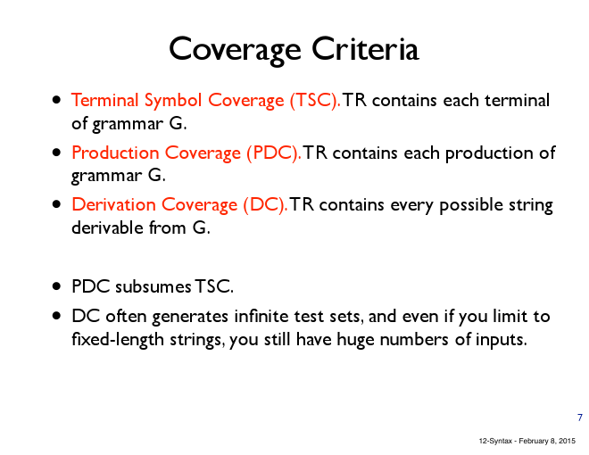

12-Syntax
1 Page 1
2 Page 2

2.1 Notes
- input-space grammars: mutate the input, (change input)
- program-based grammars: most common testing, mutate the program rather than input
3 Page 3

3.1 Notes
- you are mutating some grammar, if the grammar is defining the input, some program allows a wide width of input, some program allows very narrow range of inputs. As compiler, the input is a valid program which is an example of narrow range input
3.2 valid string
- deposit 123 $100.25
- debit 100 $20.70
3.3 invalid string
- deposit $12 $12
4 Page 4

4.1 TODO pros using grammar instead of regular expression
- using grammar is more expressive
- some strings cannot express by regular expression
- e.x. strings with parenthesis?? (不确定)
5 Page 5

5.1 TODO Notes
- 这里我去弄git了 没听到 帮我补上
6 Page 6

6.1 TODO Notes
- 这里我还是没听 在push Notes
6.2 TODO Terminals are?
- 什么是terminal？ 好像记得不是很对
- deposit
- debit
- $
- "
- .
6.3 Can you generate string that satisfy terminal coverage?
- deposit 012 $4567.89
- debit 000 $0.00
6.4 How many terminal?
- 14
6.5 How many productions?
- the last line digit has 10 production rules and there are 7 on the top
- digit=["0"-"9"] is exactly: digit="0"|"1"|…|"9"
- 17
7 Page 7

7.1 TSC
- all the terminal has to be covered
- e.x. you want to make sure deposit or debt being generated